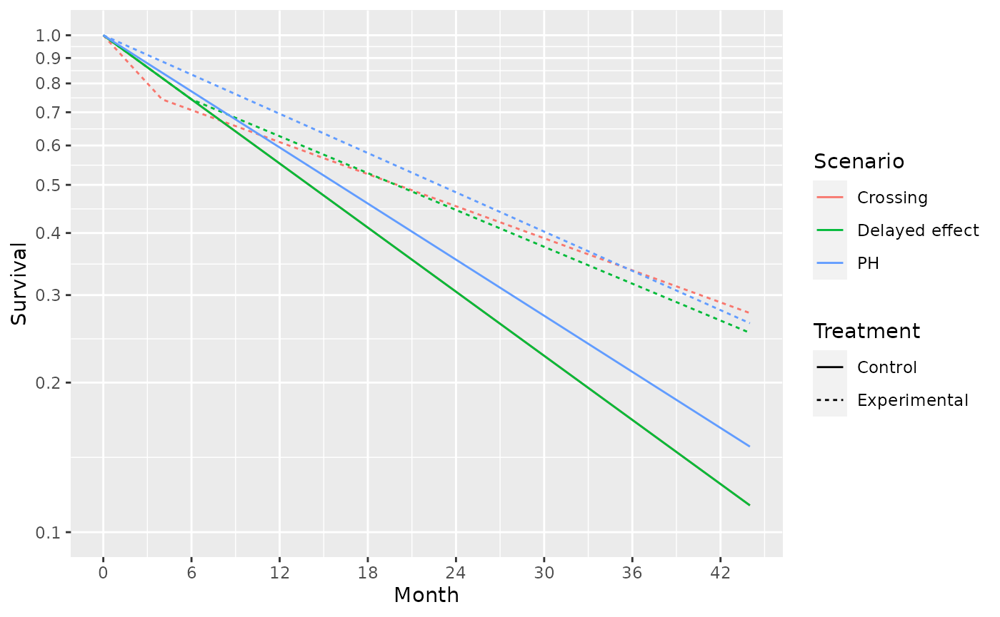
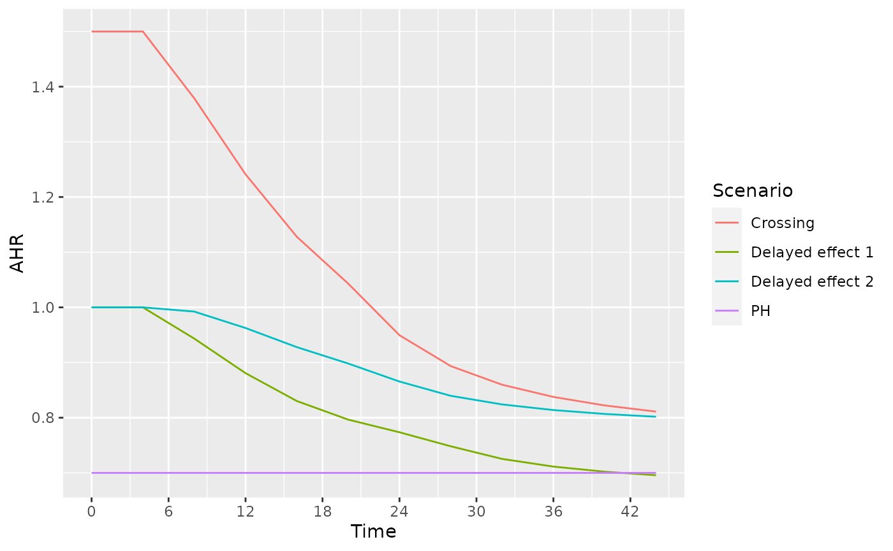
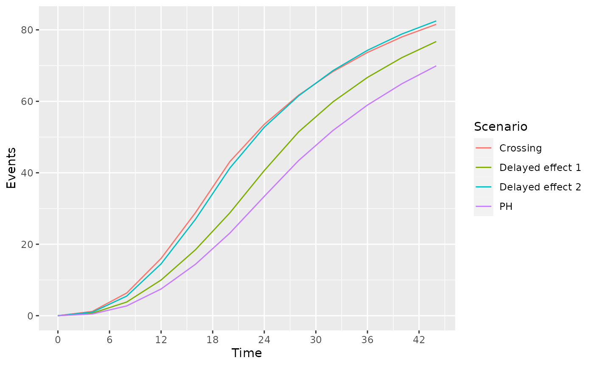

DesignWithAverageHazardRatio.Rmd
# packages used
library(gsDesign)
library(gsDesign2)
library(gsdmvn)
library(ggplot2)
library(dplyr)
library(knitr)
library(kableExtra)
library(gt)
library(tidyr)Expected enrollment duration is 24 months with piecewise constant enrollment rates escalating every 2 months until month 6 where enrollment is assumed to have reached steady state. For alternate scenarios, enrollment will occur at a faster than planned rate. For both scenarios, we assume for initial illustrations that the total enrollment is 100 subjects.
# 6 month ramp-up of enrollment, 24 months enrollment time target
enroll24 <- tibble::tibble(Stratum = rep("All",4),
duration = c(rep(2,3), 18),
rate = 1:4)
# Set rates to enroll 100 subjects
N <- sum(enroll24$duration * enroll24$rate)
enroll24$rate <- enroll24$rate * 100 / N
# Enroll in 16 months, same ramp-up
enroll16 <- tibble::tibble(Stratum = rep("All",4),
duration = c(rep(2,3), 12),
rate = 1:4)
# Set rates to enroll 100 subjects
N <- sum(enroll16$duration * enroll16$rate)
enroll16$rate <- enroll16$rate * 100 / N
# Put these in a single tibble by scenario
# We will use 16 month enrollment for delayed effect and crossing hazards
# scenarios
enrollRates <- rbind(enroll24 %>% mutate(Scenario = "PH"),
enroll24 %>% mutate(Scenario = "Delayed effect 1"),
enroll16 %>% mutate(Scenario = "Delayed effect 2"),
enroll16 %>% mutate(Scenario = "Crossing")
)We will consider the following failure rate assumptions:
Survival curves for these 3 scenarios are shown below:
Month <- c(0,4,6,44)
duration <- Month - c(0,Month[1:3])
control_rate <- log(2) / c(rep(16,4), rep(14, 4), rep(14, 4))
s <- tibble::tibble(Scenario = c(rep("PH",4), rep("Delayed effect", 4), rep("Crossing", 4)),
Treatment = rep("Control", 12),
Month = rep(Month, 3),
duration = rep(duration, 3),
rate = control_rate,
hr = c(rep(.7, 4), c(1, 1, 1, .575), c(1.5,1.5, .5, .5)),
)
s <- rbind(s,
s %>% mutate(Treatment = "Experimental",
rate = rate * hr)
) %>%
group_by(Scenario, Treatment) %>%
mutate(Survival = exp(-cumsum(duration * rate)))
ggplot(s, aes(x = Month, y = Survival, col = Scenario, lty = Treatment)) +
geom_line() +
scale_y_log10(breaks = (1:10) /10, lim=c(.1,1))+
scale_x_continuous(breaks = seq(0,42, 6))
# Durations to be used in common for all failure rate scenarios
dur <- c(4,2,100)
# Exponential failure, proportional hazards
failRates <- rbind(tibble(Scenario = "PH", Stratum = "All",
duration = dur, failRate = log(2) / 14,
hr = 0.7, dropoutRate = .001),
tibble(Scenario = "Delayed effect 1", Stratum = "All",
duration = dur, failRate = log(2) / 11,
hr = c(1, .6, .6), dropoutRate = .001),
tibble(Scenario = "Delayed effect 2", Stratum = "All",
duration = dur, failRate = log(2) / 11,
hr = c(1, 1, .7), dropoutRate = .001),
tibble(Scenario = "Crossing", Stratum = "All",
duration = dur, failRate = log(2) / 11,
hr = c(1.5, .6,.6), dropoutRate = .001)
)
hr <- NULL
for(g in c("PH", "Delayed effect 1", "Delayed effect 2", "Crossing")){
hr <-
rbind(hr,
AHR(enrollRates = enrollRates %>% filter(Scenario == g),
failRates = failRates %>% filter(Scenario == g),
totalDuration = c(.001, seq(4, 44, 4))
) %>%
mutate(Scenario = g)
)
}
ggplot(hr, aes(x=Time, y=AHR, col = Scenario)) + geom_line() + scale_x_continuous(breaks = seq(0, 42, 6))
ggplot(hr, aes(x=Time, y=`Events`, col = Scenario)) + geom_line() + scale_x_continuous(breaks = seq(0, 42, 6))
We power a fixed design at 90% with 2.5% one-sided Type I error under the different scenarios under consideration.
ss_ahr_fixed <- NULL
for(g in c("PH", "Delayed effect 1","Delayed effect 2", "Crossing")){
ss_ahr_fixed <-
rbind(ss_ahr_fixed,
gs_design_ahr(enrollRates = enrollRates %>% filter(Scenario == g),
failRates = failRates %>% filter(Scenario == g),
analysisTimes = 36,
upper = gs_b, upar = qnorm(.975),
lower = gs_b, lpar = -Inf,
alpha = .025,
beta = .1
)$bounds %>% mutate(Scenario = g)
)
}
ss_ahr_fixed %>% select(Time, N, Events, AHR, Scenario) %>%
gt() %>% fmt_number(columns=1:3,decimals = 0) %>% fmt_number(columns = 4, decimals = 3) %>%
tab_header(title = "Sample Size and Events Required by Scenario",
subtitle = "36 Month Trial duration, 2.5% One-sided Type 1 Error, 90% Power")| Sample Size and Events Required by Scenario | ||||
|---|---|---|---|---|
| 36 Month Trial duration, 2.5% One-sided Type 1 Error, 90% Power | ||||
| Time | N | Events | AHR | Scenario |
| 36 | 563 | 332 | 0.700 | PH |
| 36 | 547 | 365 | 0.711 | Delayed effect 1 |
| 36 | 1,338 | 993 | 0.814 | Delayed effect 2 |
| 36 | 1,846 | 1,360 | 0.838 | Crossing |
Assuming delayed effect 1 is the primary scenario for which we wish to protect power, how long should the trial be to optimize the tradeoffs between sample size, AHR and events required? We will inform this tradeoff by looking sizing the trial for different assumed trial durations with the same failure rates and assumed relative enrollment rates. The counts of events required is perhaps the most interesting here in that a 24 month trial requires almost twice the events to be powered at 90% compared to a trial of 42 months duration. For further study, we will consider the 36 month trial duration as a reasonable tradeoff between time, sample size and power under a presumed delayed effect of 4 months followed by a hazard ratio of 0.6 thereafter.
ss_ahr_fixed <- NULL
g <- "Delayed effect 1"
for(trialEnd in c(24,30,36,42)){
ss_ahr_fixed <-
rbind(ss_ahr_fixed,
gs_design_ahr(enrollRates = enrollRates %>% filter(Scenario == g),
failRates = failRates %>% filter(Scenario == g),
analysisTimes = trialEnd,
upper = gs_b, upar = qnorm(.975),
lower = gs_b, lpar = -Inf,
alpha = .025,
beta = .1
)$bounds %>% mutate(Scenario = g)
)
}
ss_ahr_fixed %>% select(Time, N, Events, AHR, Scenario) %>%
gt() %>% fmt_number(columns=1:3,decimals = 0) %>% fmt_number(columns = 4, decimals = 3) %>%
tab_header(title = "Sample Size and Events Required by Trial Duration",
subtitle = "Delayed Effect of 4 Months, HR = 0.6 Thereafter; 90% Power")| Sample Size and Events Required by Trial Duration | ||||
|---|---|---|---|---|
| Delayed Effect of 4 Months, HR = 0.6 Thereafter; 90% Power | ||||
| Time | N | Events | AHR | Scenario |
| 24 | 1,582 | 643 | 0.774 | Delayed effect 1 |
| 30 | 801 | 448 | 0.735 | Delayed effect 1 |
| 36 | 547 | 365 | 0.711 | Delayed effect 1 |
| 42 | 441 | 329 | 0.699 | Delayed effect 1 |
Experimental version of AHR().
AHRx <- function(enrollRates=tibble::tibble(Stratum="All",
duration=c(2,2,10),
rate=c(3,6,9)),
failRates=tibble::tibble(Stratum="All",
duration=c(3,100),
failRate=log(2)/c(9,18),
hr=c(.9,.6),
dropoutRate=rep(.001,2)),
totalDuration=30,
ratio=1,
simple=TRUE
){
# check input values
# check input enrollment rate assumptions
if(max(names(enrollRates)=="Stratum") != 1){stop("gsDesign2: enrollRates column names in `AHR()` must contain stratum")}
if(max(names(enrollRates)=="duration") != 1){stop("gsDesign2: enrollRates column names in `AHR()` must contain duration")}
if(max(names(enrollRates)=="rate") != 1){stop("gsDesign2: enrollRates column names in `AHR()' must contain rate")}
# check input failure rate assumptions
if(max(names(failRates)=="Stratum") != 1){stop("gsDesign2: failRates column names in `AHR()` must contain stratum")}
if(max(names(failRates)=="duration") != 1){stop("gsDesign2: failRates column names in `AHR()` must contain duration")}
if(max(names(failRates)=="failRate") != 1){stop("gsDesign2: failRates column names in `AHR()` must contain failRate")}
if(max(names(failRates)=="hr") != 1){stop("gsDesign2: failRates column names in `AHR()` must contain hr")}
if(max(names(failRates)=="dropoutRate") != 1){stop("gsDesign2: failRates column names in `AHR()` must contain dropoutRate")}
# check input trial durations
if(!is.numeric(totalDuration)){stop("gsDesign2: totalDuration in `AHR()` must be a non-empty vector of positive numbers")}
if(!is.vector(totalDuration) > 0){stop("gsDesign2: totalDuration in `AHR()` must be a non-empty vector of positive numbers")}
if(!min(totalDuration) > 0){stop("gsDesign2: totalDuration in `AHR()` must be greater than zero")}
strata <- names(table(enrollRates$Stratum))
strata2 <- names(table(failRates$Stratum))
length(strata) == length(strata2)
for(s in strata){
if(max(strata2==s) != 1){stop("gsDesign2: Strata in `AHR()` must be the same in enrollRates and failRates")}
}
# check input simple is logical
if(!is.logical(simple)){stop("gsDesign2: simple in `AHR()` must be logical")}
# compute proportion in each group
Qe <- ratio / (1 + ratio)
Qc <- 1 - Qe
# compute expected events by treatment group, stratum and time period
rval <- NULL
for(td in totalDuration){
events <- NULL
for(s in strata){
# subset to stratum
enroll <- enrollRates %>% filter(Stratum==s)
fail <- failRates %>% filter(Stratum==s)
# Control events
enrollc <- enroll %>% mutate(rate=rate*Qc)
control <- eEvents_df(enrollRates=enrollc,failRates=fail,totalDuration=td,simple=FALSE)
# Experimental events
enrolle <- enroll %>% mutate(rate=rate*Qe)
fre <- fail %>% mutate(failRate=failRate*hr)
experimental <- eEvents_df(enrollRates=enrolle,failRates=fre,totalDuration=td,simple=FALSE)
# Combine control and experimental; by period recompute HR, events, information
events <-
rbind(control %>% mutate(Treatment="Control"),
experimental %>% mutate(Treatment="Experimental")) %>%
arrange(t, Treatment) %>% ungroup() %>% group_by(t) %>%
summarize(Stratum = s, info = (sum(1 / Events))^(-1),
Events = sum(Events), HR = last(failRate) / first(failRate)
) %>%
rbind(events)
}
rval <- rbind(rval,
events %>%
mutate(Time=td, lnhr = log(HR), info0 = Events * Qc * Qe) %>%
# NEXT 2 lines are the only changes from AHR()
ungroup() %>% group_by(Stratum, t) %>%
summarize(Time = td, Events = sum(Events), HR=first(HR), lnhr=first(lnhr), info0 = sum(info0), info = sum(info)) %>% ungroup()
)
}
if(!simple) return(rval %>% select(c("Time", "Stratum", "t", "HR", "Events", "info", "info0")) %>%
group_by(Time, Stratum) %>% arrange(t, .by_group = TRUE))
return(rval %>%
group_by(Time) %>%
summarize(AHR = exp(sum(log(HR)*Events)/sum(Events)),
Events = sum(Events),
info = sum(info),
info0 = sum(info0))
)
}Under the different scenarios of interest, we can examine the expected number of events in time periods of interest.
events_by_time_period <- NULL
for(g in c("PH", "Delayed effect 1","Delayed effect 2", "Crossing")){
events_by_time_period <-
rbind(events_by_time_period,
AHRx(enrollRates = enrollRates %>% filter(Scenario == g),
failRates = failRates %>% filter(Scenario == g),
totalDuration = c(12, 20, 28, 36), simple = FALSE) %>% mutate(Scenario = g)
)
}## `summarise()` has grouped output by 'Stratum'. You can override using the `.groups` argument.
## `summarise()` has grouped output by 'Stratum'. You can override using the `.groups` argument.
## `summarise()` has grouped output by 'Stratum'. You can override using the `.groups` argument.
## `summarise()` has grouped output by 'Stratum'. You can override using the `.groups` argument.
## `summarise()` has grouped output by 'Stratum'. You can override using the `.groups` argument.
## `summarise()` has grouped output by 'Stratum'. You can override using the `.groups` argument.
## `summarise()` has grouped output by 'Stratum'. You can override using the `.groups` argument.
## `summarise()` has grouped output by 'Stratum'. You can override using the `.groups` argument.
## `summarise()` has grouped output by 'Stratum'. You can override using the `.groups` argument.
## `summarise()` has grouped output by 'Stratum'. You can override using the `.groups` argument.
## `summarise()` has grouped output by 'Stratum'. You can override using the `.groups` argument.
## `summarise()` has grouped output by 'Stratum'. You can override using the `.groups` argument.
## `summarise()` has grouped output by 'Stratum'. You can override using the `.groups` argument.
## `summarise()` has grouped output by 'Stratum'. You can override using the `.groups` argument.
## `summarise()` has grouped output by 'Stratum'. You can override using the `.groups` argument.
## `summarise()` has grouped output by 'Stratum'. You can override using the `.groups` argument.
events_by_time_period %>% gt()| t | HR | Events | info | info0 | Scenario |
|---|---|---|---|---|---|
| 12 - All | |||||
| 0 | 0.7 | 5.1852619 | 1.2615254 | 1.2963155 | PH |
| 4 | 0.7 | 1.2900768 | 0.3161088 | 0.3225192 | PH |
| 6 | 0.7 | 0.9992867 | 0.2461646 | 0.2498217 | PH |
| 0 | 1.0 | 7.5026311 | 1.8756578 | 1.8756578 | Delayed effect 1 |
| 4 | 0.6 | 1.4148718 | 0.3334561 | 0.3537179 | Delayed effect 1 |
| 6 | 0.6 | 1.0660140 | 0.2551204 | 0.2665035 | Delayed effect 1 |
| 0 | 1.0 | 10.5036835 | 2.6259209 | 2.6259209 | Delayed effect 2 |
| 4 | 1.0 | 2.4549051 | 0.6137263 | 0.6137263 | Delayed effect 2 |
| 6 | 0.7 | 1.5503657 | 0.3774733 | 0.3875914 | Delayed effect 2 |
| 0 | 1.5 | 12.7170764 | 3.0829595 | 3.1792691 | Crossing |
| 4 | 0.6 | 1.8916151 | 0.4309693 | 0.4729038 | Crossing |
| 6 | 0.6 | 1.4223228 | 0.3303949 | 0.3555807 | Crossing |
| 20 - All | |||||
| 0 | 0.7 | 11.0617281 | 2.6918692 | 2.7654320 | PH |
| 4 | 0.7 | 3.8607787 | 0.9461198 | 0.9651947 | PH |
| 6 | 0.7 | 8.2028185 | 2.0274071 | 2.0507046 | PH |
| 0 | 1.0 | 15.9738890 | 3.9934723 | 3.9934723 | Delayed effect 1 |
| 4 | 0.6 | 4.2318445 | 0.9976903 | 1.0579611 | Delayed effect 1 |
| 6 | 0.6 | 8.5867796 | 2.0744467 | 2.1466949 | Delayed effect 1 |
| 0 | 1.0 | 21.5580025 | 5.3895006 | 5.3895006 | Delayed effect 2 |
| 4 | 1.0 | 7.3386703 | 1.8346676 | 1.8346676 | Delayed effect 2 |
| 6 | 0.7 | 12.4353719 | 3.0443187 | 3.1088430 | Delayed effect 2 |
| 0 | 1.5 | 26.0319889 | 6.3157669 | 6.5079972 | Crossing |
| 4 | 0.6 | 5.6575413 | 1.2894992 | 1.4143853 | Crossing |
| 6 | 0.6 | 11.4403357 | 2.6904019 | 2.8600839 | Crossing |
| 28 - All | |||||
| 0 | 0.7 | 15.4257237 | 3.7546492 | 3.8564309 | PH |
| 4 | 0.7 | 6.4314807 | 1.5761307 | 1.6078702 | PH |
| 6 | 0.7 | 21.5768513 | 5.3488075 | 5.3942128 | PH |
| 0 | 1.0 | 22.2370521 | 5.5592630 | 5.5592630 | Delayed effect 1 |
| 4 | 0.6 | 7.0488173 | 1.6619243 | 1.7622043 | Delayed effect 1 |
| 6 | 0.6 | 22.1716513 | 5.4012239 | 5.5429128 | Delayed effect 1 |
| 0 | 1.0 | 22.2370521 | 5.5592630 | 5.5592630 | Delayed effect 2 |
| 4 | 1.0 | 9.1570597 | 2.2892649 | 2.2892649 | Delayed effect 2 |
| 6 | 0.7 | 30.1523434 | 7.4217817 | 7.5380859 | Delayed effect 2 |
| 0 | 1.5 | 26.8302861 | 6.5109859 | 6.7075715 | Crossing |
| 4 | 0.6 | 7.0611116 | 1.6097430 | 1.7652779 | Crossing |
| 6 | 0.6 | 27.8387318 | 6.6300112 | 6.9596830 | Crossing |
| 36 - All | |||||
| 0 | 0.7 | 15.4257237 | 3.7546492 | 3.8564309 | PH |
| 4 | 0.7 | 6.7480926 | 1.6537787 | 1.6870231 | PH |
| 6 | 0.7 | 36.7770862 | 9.1420106 | 9.1942716 | PH |
| 0 | 1.0 | 22.2370521 | 5.5592630 | 5.5592630 | Delayed effect 1 |
| 4 | 0.6 | 7.3945534 | 1.7436142 | 1.8486384 | Delayed effect 1 |
| 6 | 0.6 | 37.0547447 | 9.0971239 | 9.2636862 | Delayed effect 1 |
| 0 | 1.0 | 22.2370521 | 5.5592630 | 5.5592630 | Delayed effect 2 |
| 4 | 1.0 | 9.1570597 | 2.2892649 | 2.2892649 | Delayed effect 2 |
| 6 | 0.7 | 42.8818670 | 10.6126866 | 10.7204667 | Delayed effect 2 |
| 0 | 1.5 | 26.8302861 | 6.5109859 | 6.7075715 | Crossing |
| 4 | 0.6 | 7.0611116 | 1.6097430 | 1.7652779 | Crossing |
| 6 | 0.6 | 39.7839241 | 9.6020931 | 9.9459810 | Crossing |
Recall that our alternate hypothesis assumes no treatment effect (HR=1) for 4 months and then HR = 0.6 thereafter. For any of the above scenarios, if we wish to base a futility bound on this assumption plus the above number of events in the first 4 months and after 4 months, then we can compute the average hazard ratio under the alternate hazard ratio for each scenario at 20 months as follows. You can see that an interim futility spending bound based on the alternate hypothesis can depend fairly heavily on enrollment and the control failure rate. Note also that at the time of interim analysis, the alternate hypothesis AHR can be computed in this same fashion based on observed events by time period. Note that this can be quite different than the scenario HR; e.g., for PH, we assume HR=0.7 throughout, but for the futility bound comparison, we compute blinded AHR that decreases with each analysis under the alternate hypothesis.
# Time periods for each scenario were 0-4, 4-6, and 6+
# Thus H1 has HR as follows
hr1 <- tibble(t = c(0, 4, 6), hr1 = c(1, .6, .6))
ahr_by_analysis <-
events_by_time_period %>%
full_join(hr1) %>%
group_by(Scenario, Time) %>%
summarize(AHR1 = exp(sum(Events * log(hr1))/ sum(Events)))## Joining, by = "t"## `summarise()` has grouped output by 'Scenario'. You can override using the `.groups` argument.
ahr_by_analysis %>%
pivot_wider(names_from = Scenario, values_from = AHR1) %>%
gt() %>% fmt_number(columns=2:5, decimals = 3)| Time | Crossing | Delayed effect 1 | Delayed effect 2 | PH |
|---|---|---|---|---|
| 12 | 0.900 | 0.881 | 0.868 | 0.855 |
| 20 | 0.817 | 0.797 | 0.783 | 0.766 |
| 28 | 0.749 | 0.748 | 0.722 | 0.719 |
| 36 | 0.723 | 0.711 | 0.699 | 0.686 |
Here we assume the design is under a delayed effect model where the delay is not too long and the long-term average hazard ratio benefit is strong. proportional hazards scenario, but we look at power under the alternate scenarios. We will plan a 36 month group sequential design under the delayed effect 1 scenario. Interim analyses are planned after 12, 20, and 28 months.
analysisTimes <- c(12, 20, 28, 36)
upar <- list(sf = gsDesign::sfLDOF, total_spend = 0.025, param = NULL, timing = NULL, theta=0)
lpar <- list(sf = gsDesign::sfHSD, total_spend = .1, param = -2, timing = NULL, theta=NULL)
NPHasymmetric <- gs_design_ahr(enrollRates = enrollRates,
failRates = failRates,
ratio = 1, alpha = .025, beta = 0.1,
# Information fraction not required (but available!)
analysisTimes = analysisTimes,
# Function to enable spending bound
upper = gs_spending_bound, lower = gs_spending_bound,
# Spending function and parameters used
upar = upar, lpar = lpar
)
NPHasymmetric$bounds## # A tibble: 8 × 11
## Analysis Bound Time N Events Z Probability AHR theta info info0
## <int> <chr> <dbl> <dbl> <dbl> <dbl> <dbl> <dbl> <dbl> <dbl> <dbl>
## 1 1 Upper 12 231. 40.3 6.58 0.0000000236 0.7 0.357 9.82 10.1
## 2 2 Upper 20 436. 125. 3.62 0.0492 0.7 0.357 30.5 31.1
## 3 3 Upper 28 577. 236. 2.52 0.577 0.7 0.357 58.1 59.1
## 4 4 Upper 36 769. 358. 1.99 0.900 0.7 0.357 88.2 89.4
## 5 1 Lower 12 231. 40.3 -1.54 0.00391 0.7 0.357 9.82 10.1
## 6 2 Lower 20 436. 125. -0.265 0.0156 0.7 0.357 30.5 31.1
## 7 3 Lower 28 577. 236. 0.899 0.0429 0.7 0.357 58.1 59.1
## 8 4 Lower 36 769. 358. 1.99 0.100 0.7 0.357 88.2 89.4By scenario, we now wish to compute the adjusted expected futility bounds and the power implied.
xx <- NULL
lparx <- lpar
for(g in c("PH", "Delayed effect 1","Delayed effect 2", "Crossing")){
AHR1 <- (filter(ahr_by_analysis, Scenario == g))$AHR1
lparx$theta1 <- -log(AHR1)
yy <- gs_power_ahr(enrollRates = enrollRates %>% filter(Scenario == g),
failRates = failRates %>% filter(Scenario == g),
events = NULL,
analysisTimes = c(12,20,28,36),
upper = gs_spending_bound,
upar = upar,
lower = gs_spending_bound,
lpar = lparx)
xx <- rbind(xx, yy %>% mutate(Scenario = g))
}
ss_FH05_fixed <- NULL
g <- "Delayed effect"
# for(g in c("PH", "Delayed effect", "Crossing")){
# ss_FH05_fixed <-
# rbind(ss_FH05_fixed,
gs_arm <- gsdmvn:::gs_create_arm(enrollRates, failRates %>% filter(Scenario == g),
ratio = 1, # Randomization ratio
total_time = 44) # Total study duration
arm0 <- gs_arm[["arm0"]]
arm1 <- gs_arm[["arm1"]]
npsurvSS::size_two_arm(arm0, arm1, power = 0.9, alpha = 0.025,
test = list(test="weighted logrank", weight = "FH_p.5_q0"))
npsurvSS::size_two_arm(arm0, arm1, power = 0.9, alpha = 0.025,
test = list(test="rmst difference",
# Milestone allow user to define RMST cutpoint
milestone = 44)) # 42 selected since better than 40 or 44
gsdmvn:::gs_design_wlr(enrollRates = enrollRates,
failRates = failRates %>% filter(Scenario == g),
weight = function(x, arm0, arm1){
gsdmvn:::wlr_weight_fh(x, arm0, arm1,
rho = 0, gamma = 0.5, tau = 4)},
alpha = .025, beta = .1,
upar = qnorm(.975),
lpar = -Inf,
analysisTimes = 44)$bounds %>% filter(Bound =="Upper")
# Ignore tau or (tau can be -1)
gsdmvn:::gs_design_wlr(enrollRates = enrollRates,
failRates = failRates %>% filter(Scenario == g),
weight = function(x, arm0, arm1){
gsdmvn:::wlr_weight_fh(x, arm0, arm1,
rho = 0, gamma = 0.5)},
alpha = .025, beta = .1,
upar = qnorm(.975),
lpar = -Inf,
analysisTimes = 44)$bounds %>% filter(Bound =="Upper")# MaxCombo
MC_test <- data.frame(rho = c(0, 0, .5), gamma = c(0, .5, .5), tau = -1,
test = 1:3,
Analysis = 1,
analysisTimes = 44)
gs_design_combo(enrollRates,
failRates %>% filter(Scenario == g),
MC_test,
alpha = 0.025,
beta = 0.1,
ratio = 1,
binding = FALSE,
upper = gs_spending_combo,
upar = list(sf = gsDesign::sfLDOF, total_spend = 0.025),
lower = gs_spending_combo,
lpar = list(sf = gsDesign::sfLDOF, total_spend = .1)
)
}